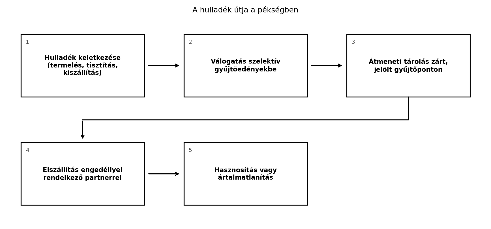

Egy pékség hajnali műszakja után sok hulladék keletkezhet: levágott tésztadarab, félresikerült vekni, csöpögő mosogató, feleslegesen bekapcsolt hűtő, tele zsíros doboz. A környezetvédelem nem külön program, hanem a mindennapi munka része: aki rendet tart a hulladékban, az a pénzzel, az energiával és a termékbiztonsági kockázatokkal is rendet tart. Ebben az alfejezetben megtanulod, hogyan állíts fel olyan hulladékkezelési rendet, amely csökkenti a veszteséget, megfelel a hatósági előírásoknak, és hosszú távon a pékség költségeit is mérsékeli.
A hulladék útja a pékségben több állomáson halad át: keletkezés, válogatás, átmeneti tárolás, elszállítás és hasznosítás vagy ártalmatlanítás. Az alábbi ábra ezt az utat mutatja.

A folyamat lényege, hogy a hulladékot minél korábban, már a keletkezés helyén szétválasszuk, mert a kevert hulladék később nehezen hasznosítható, és több költséget okoz.
Definíció. A környezetvédelem minden olyan tevékenység, amely a környezet szennyezését, károsodását megelőzi, csökkenti vagy megszünteti, és a természeti erőforrásokat takarékosan használja.
Definíció. A hulladék olyan anyag vagy tárgy, amelytől a birtokosa megválik, megválni szándékozik, vagy megválni köteles. A pékségben hulladék például a leégett tészta, a kevert söpredék, az elhasznált csomagolóanyag, a használt sütőolaj.
Szabály. A hulladékhierarchia sorrendje a megelőzéstől az ártalmatlanítás felé halad: elsősorban a hulladék keletkezését kell megelőzni; ami mégis keletkezik, azt elő kell készíteni újrahasználatra; ami nem használható újra, azt újrafeldolgozni (anyagában hasznosítani, például komposztálni vagy csomagolóanyagot szelektíven gyűjteni); ami nem, azt egyéb módon hasznosítani (például energetikailag); végül ami nem hasznosítható, azt ártalmatlanítani kell (öt szint; ellenőrizendő: hatályos hulladéktörvény). A pékségben ez azt jelenti: a legjobb hulladék az, amelyik létre sem jön. Az el nem adott, élelmiszer-biztonsági szempontból megfelelő terméket elsősorban emberi fogyasztásra juttatjuk (adományozás, lejárat előtti akció), csak utána takarmányozásra (a takarmányozásra átadott volt élelmiszer nem hulladék, hanem melléktermék; ellenőrizendő: NÉBIH élelmiszer-adományozási útmutató, minőségmegőrzési idő szabályai).
Definíció. A melléktermék olyan anyag vagy tárgy, amely nem elsődleges termékként keletkezik a gyártás során, de bizonyos feltételek mellett nem hulladék, hanem további hasznosításra alkalmas. Például a kenyérhéj-morzsa, ha takarmánynak, panírmorzsának vagy egyéb élelmiszer-alapanyagnak hasznosítják, melléktermék lehet, ha megfelel a vonatkozó előírásoknak (ellenőrizendő: a hulladék-státusz megszűnésének feltételei a hatályos hulladéktörvényben).
Továbbvitt eredmény. A hulladékcsökkentés és energiahatékonyság költségmegtakarítást eredményez, ezért ezt az alfejezetet a Gazdálkodási alapismeretek alfejezetben használjuk fel: a veszteség pénzben mérhető, és a környezetvédelmi intézkedések megtérülnek.
A pékségben a hulladék elsősorban technológiai hibából, rossz tervezésből, nem megfelelő tárolásból vagy a gépek rossz beállításából származik. A megelőzés ezért nem elkülönített feladat, hanem a napi termelés része.
Szabály. A hulladékcsökkentés első lépése a veszteségforrások azonosítása. Figyeljük meg, hogy hol keletkezik rendszeresen tészta- vagy termékveszteség: túl nagy feladási tömeg, túl hosszú kelesztés miatt elterülő tészta, leégett első vetés, pontatlan osztás, csöpögő csomagológép. Minden veszteségforráshoz rendeljünk okot és intézkedést.
Példa. Egy pékség napi 500 kg lisztből dolgozik, és naponta átlagosan 12 kg tésztát selejtez le az osztó-gömbölyítő gép rossz beállítása miatt. Ha a gépet pontosan beállítják, és a selejt 3 kg-ra csökken, akkor a napi megtakarítás 9 kg tészta. Havi 25 munkanappal ez 225 kg tészta, ami 160%-os tésztahozammal ( kg) kb. 140 kg liszt és a hozzá tartozó egyéb nyersanyag megtakarításával egyenértékű (tanulási példa, üzemi mérés nélkül).
Eljárás. Szelektív hulladékkezelési rend felállítása a pékségben
Higiénia. A szerves hulladék, különösen a tészta- és kenyérmaradék, gyorsan romlik, kellemetlen szagot áraszt, és legyeket, rágcsálókat vonz. Ezért a gyűjtőedényt mindig tartsuk lefedve, a környékét takarítsuk, és a szerves hulladékot naponta szállítsuk el a termelőtérből. A hulladékgyűjtő terület nem lehet a nyersanyagbejárat közelében.
A szelektív gyűjtés célja, hogy a hasznosítható anyagokat ne keverjük a kommunális hulladékkal. A pékségben leggyakrabban a következő frakciók különíthetők el:
Szabály. A szerves hulladékot – ha takarmányként vagy komposztként hasznosítják – el kell különíteni a szennyezett, nem élelmiszer-biztonsági minőségű hulladéktól. A takarmányozásra szánt morzsa nem keveredhet csomagolóanyaggal, földdel vagy vegyszerrel.
Előírás. A kenyér- és péksütemény-maradék takarmányozási célú átadása csak a takarmányjog szerint lehetséges: az átvevőnek nyilvántartásba vett takarmányipari vállalkozónak kell lennie, vagy engedélyezett feldolgozónak kell átadni. Az állati eredetű összetevőt (tojás, tej, hús, túró) tartalmazó maradék állati mellékterméknek minősülhet, a konyhai hulladék gazdasági haszonállatokkal való etetése tilos (ellenőrizendő: 183/2005/EK, 1069/2009/EK, 142/2011/EU és a NÉBIH útmutatója a volt élelmiszerekről). A tojáshéjat és a zöldségmaradékot ezért nem adjuk át „szomszéd állattartónak”.
Megjegyzés. A morzsa és a kenyérhéj nem feltétlenül hulladék. A panírmorzsa, a zsemlemorzsa vagy a takarmánycélú szárítmány értékes melléktermék lehet, ha a gyártás során élelmiszer-biztonsági szempontból ellenőrzött anyagból, elkülönítve gyűjtik. A szennyezett, földre hullott, penészes anyagot nem szabad takarmányozásra átadni.
Allergén. A takarmányozásra vagy újrahasznosításra szánt morzsáknál is figyelni kell az allergén keresztszennyeződésre. Ha a pékségben gluténtartalmú és gluténmentes terméket is készítenek, a morzsa nem keveredhet, és a csomagolásnál feltüntetett allergéninformációt be kell tartani (ellenőrizendő: 1169/2011/EU rendelet allergénjelölési követelményei).
A pékség jelentős ivóvíz-felhasználó: víz kell a tésztához, a mosogatáshoz, a takarításhoz, a gőzöléshez, a kézmosáshoz. A víz minősége az A víz szerepe és minőségi követelményei alfejezetben tanultak szerint élelmiszer-biztonsági kérdés is.
Szabály. A pékségben csak ivóvíz-minőségű víz érintkezhet élelmiszerrel. A vízfelhasználást mérjük, és a nagyobb fogyasztókat (mosogató, kelesztő párásítás, takarítás) rendszeresen ellenőrizzük. A csöpögő csapot azonnal javíttassuk.
Definíció. A szennyvíz a termelésből, tisztításból és szociális helyiségekből származó használt víz. A sütőipari szennyvízben gyakori a liszt, a tészta, a zsír, a cukor, a mosogatószer.
Figyelem. A csatornába kerülő szennyvíz nem tartalmazhat olyan zsírmennyiséget, amely dugulást vagy a közcsatorna-hálózat károsodását okozza. Ezért a pékségekben zsírfogót kell beépíteni a zsíros szennyvizet adó berendezések (sütő, mosogató, fánksütő) lefolyójába. A zsírfogót rendszeresen, a gyártói előírás szerint kell üríteni és tisztítani, mert a telített zsírfogó nem fogja vissza a zsírt.
Higiénia. A zsírfogó ürítése kellemetlen és higiéniai szempontból is kockázatos művelet. Védekezzünk gumikesztyűvel, köténnyel, szükség szerint arcvédővel. A zsíros hulladékot zárható edénybe gyűjtsük, és a szolgáltató vagy engedélyes elszállító viszi el (ellenőrizendő: a hulladék besorolása a hatályos hulladékjegyzék szerint; a helyi csatornamű szennyvíz-kibocsátási határértékei, zsírfogó-követelmények).
A pékség levegőjébe lisztpor, kemencegáz, sütés közben keletkező gőz és esetleg füst kerülhet.
Szabály. A lisztport a forrásnál kell elszívni: a lisztöntő, a dagasztó, az osztó fölött elszívó berendezést kell működtetni. A poros levegő nemcsak tüdőkárosító foglalkozási kockázat, hanem robbanásveszélyes keveréket is képezhet. A lisztpor robbanásveszélyét a Munkahelyek kialakítása, közlekedés, anyagmozgatás és raktározás és a Munkakörnyezeti hatások a pékségben és az egyéni védőeszközök alfejezetek tárgyalják.
Szabály. A sütőkemence füstgázát, égéstermékét a kéményrendszernek, a kibocsátási határértékek betartásával kell elvezetnie. A gázüzemű kemence égési levegőjét és égéstermékét a gyártó utasítása szerint rendszeresen ellenőriztetni kell (ellenőrizendő: a kibocsátási határértékek a levegővédelmi előírásokban).
Szabály. Talajszennyezést okozhat a gépi kenőolaj, a használt sütőolaj, a vegyszer elfolyása. Ezért a veszélyes folyadékokat kármentő tálcán, zárható, feliratozott helyen tároljuk. A csomagolóanyagot ne tároljuk szabadban, a szél által elhordott fólia és papír a környező területet szennyezi.
A pékség legnagyobb energiafogyasztói a kemence, a hűtő-kelesztő, a hűtőtároló, a dagasztógép motorjai és a világítás. Az energiatakarékosság egyszerre csökkenti a költségeket és a környezetterhelést.
Szabály. A kemence üzemét mindig a tényleges sütési tervhez igazítsuk. A felfűtést ne kezdjük túl korán, és a sütési szünetekben a kemencét lehetőleg ne hűtsük ki, de a felesleges hőtermelést kerüljük. Törekedjünk a teljes kemencetér kihasználására: több vetés, folyamatos sütés kevésbé fajlagos energiafelhasználást ad, mint a kis tételek sütése.
Példa. Ha egy pékség kemencéje óránként 40 kWh gázenergiát használ, és naponta 2 órával rövidebb ideig üzemel felesleges melegítés nélkül, akkor napi 80 kWh energiát takarít meg. Havi 25 munkanapra ez 2000 kWh megtakarítás. A valós érték termék- és kemencefüggő, ezért tanulási példaként kezeljük (ellenőrizendő: a kemence gyártói adatlapja és a tényleges gázfogyasztás mérése).
Szabály. A hűtésnél az ajtót ne hagyjuk nyitva, a hűtőkamra hőmérsékletét ne állítsuk fölöslegesen alacsonyra: a HACCP-terv szerinti határon belül (pl. 2–4 °C, legfeljebb 5 °C – ellenőrizendő) tartsuk, és a párolgócső jegesedését rendszeresen ellenőrizzük. A hűtőberendezés hátoldalát ne takarjuk el, mert a rossz hőleadás növeli a villamos fogyasztást.
Szabály. A világítást a termelési területeken a munkavégzéshez szükséges szinten tartsuk, a szünetekben kapcsoljuk le. Az energiahatékony LED-világítás kevesebb hőt is termel, ami nyáron a hűtési igényt is csökkenti.
Előírás. A hulladékgazdálkodásra, a vízszennyezésre, a levegőtisztaságra és az energiahatékonyságra számos uniós és magyar jogszabály vonatkozik. A 852/2004/EK rendelet előírja, hogy az élelmiszer-ipari létesítményben a hulladékot megfelelően, ételtől elkülönítve, zárt, tisztítható edényben kell gyűjteni, és rendszeresen el kell távolítani (ellenőrizendő: a II. melléklet pontos szövege). A hulladékok keretszabályait a 2008/98/EK irányelv és az annak megfelelő magyar hulladéktörvény tartalmazza (ellenőrizendő: a hatályos magyar hulladékjogi előírások). A szennyvíz-kibocsátás határértékeit a közcsatornára vonatkozó helyi rendeletek szabályozzák (ellenőrizendő: az illetékes szolgáltató előírásai).
Valós eset. Egy kisebb pékségben a tulajdonos azt tapasztalta, hogy a kommunális hulladékgyűjtő konténer hetente kétszer is megtelik, és a szállítási költség magas. A dolgozók a tészta- és kenyérmaradékot, a kartondobozt, a fóliát és a műanyag rekeszt mind egy zsákba dobálták. Ráadásul a mosogató lefolyója rendszeresen dugult, mert a zsírlerakódás miatt. A tulajdonos a következőket tette: kihelyezett külön edényeket a szerves hulladéknak, a kartonnak, a fóliának és a vegyes hulladéknak. A tiszta, csak növényi összetevőjű kenyérselejtet átvételi bizonylattal egy nyilvántartott takarmány-előállítónak adta át, a töltelékes maradékot és a tojáshéjat engedélyezett gyűjtő vitte el (ellenőrizendő: a takarmányjogi feltételek). A kartont és fóliát szelektív gyűjtőbe vitte. A mosogató lefolyójára zsírfogót szereltetett. A kemence felfűtését a tényleges termeléshez igazította, és a hűtőkamra ajtajára zárókapcsolót szerelt. Három hónap alatt a kommunális hulladék mennyisége harmadára csökkent, a szállítási költség 60%-kal esett, a víz- és energiafogyasztás mérhetően csökkent. A tanulság: a hulladékkezelés nem külön teher, hanem a termelés racionalizálásának része.
A környezetvédelmi teljesítményt rendszeresen ellenőrizni kell, éppúgy, mint a termékminőséget. Mérhető mutatók lehetnek:
Megfelelés feltétele. A mennyiségi mutatókban folyamatos csökkenés vagy legalább stabil, a tervezett szinten tartás legyen a cél. A jogszabályi és hatósági határértékeket mindig be kell tartani. A gyakori eltérés, ha a hulladékmennyiség nő, a szelektív gyűjtés aránya csökken, vagy a zsírfogó túltelített.
Sorold fel a pékségben tipikusan keletkező három hulladékfajtát, és mindegyikhez rendelj egy-egy megfelelő gyűjtőedényt.
Fogalmazd meg saját szavaiddal, miért előnyösebb a szelektív gyűjtés a kevert gyűjtésnél.
Egy pékség napi 800 kg lisztből dolgozik, és a tészta-selejt napi 5% (a tészta tömegére vetítve). A tészta tömege a liszt tömegének 160%-a. Számítsd ki a napi tésztaselejt tömegét kg-ban.
A kemence felfűtési idejét 2,5 óráról 1,8 órára csökkentik. A kemence felfűtési teljesítménye átlagosan 35 kW gáz. A gáz ára 12 Ft/MJ (1 kWh = 3,6 MJ). Mennyit takarítanak meg naponta a fűtési idő csökkentésével Ft-ban? (A számítások tanulási példák, a valós értékek a kemence típusától függnek.)
Egy pékségben a mosogató lefolyója gyakran dugul, és a szennyvíz zsírtartalma magas. Javasolj három intézkedést, amelyekkel csökkenthető a zsíros szennyvíz mennyisége, és indokold meg mindegyiket.
Tervezz szelektív hulladékkezelési rendet egy 100 kg liszt/nap kapacitású kis pékség számára. Add meg, milyen hulladékfajták keletkeznek, hová helyeznéd a gyűjtőket, és milyen gyakran ürítenéd őket. A tervben tüntesd fel a higiéniai szempontokat is.
A szelektív gyűjtés lehetővé teszi az anyagok újrahasznosítását, csökkenti a kommunális hulladék mennyiségét, és így a szállítási és lerakási költséget. A kevert hulladékban a hasznosítható anyagok elszennyeződnek, és az egész kevert hulladékot ártalmatlanítani kell, ami drágább és környezetterhelőbb.
Adott: liszt napi 800 kg, tészta tömege a liszt 160%-a. Először kiszámítjuk a tészta tömegét:
A selejt 5%:
Ellenőrzés: 5% körülbelül huszadrész, 1280/20 = 64, tehát a nagyságrend helyes. A napi selejt 64 kg.
A megtakarított idő: 2,5 − 1,8 = 0,7 óra. A teljesítmény 35 kW, tehát az energiamennyiség:
Átváltás MJ-ra: 1 kWh = 3,6 MJ, így
A gáz ára 12 Ft/MJ:
Tehát naponta körülbelül 1058 Ft-ot takarítanak meg (tanulási példa, kerekítve 1060 Ft). Ellenőrzés: a 0,7 óra és 35 kW szorzata nagyságrendileg 25 kWh, ami valószerű.
A tervet táblázatban vagy felsorolásban adjuk meg. Például:
Higiéniai szempont: a szerves gyűjtőt mindig lefedve tartani, a környékét tisztítani, a gyűjtőpontot a nyersanyagoktól elkülöníteni. A dolgozókat be kell tanítani a hulladékok szétválogatására.
A pékségi környezetvédelem a hulladék megelőzésével, a szelektív gyűjtéssel, a víz- és szennyvíz-gazdálkodással, a levegőtisztaság védelmével és az energiatakarékossággal valósul meg. A hulladékhierarchia sorrendje: megelőzés, újrahasználatra előkészítés, újrafeldolgozás, egyéb hasznosítás, ártalmatlanítás; az el nem adott, biztonságos terméket előbb emberi fogyasztásra adományozzuk. A legjobb hulladék az, amely létre sem jön. A pékségben a szerves hulladékot, a kartont, a műanyagot, az üveget és a veszélyes hulladékot külön kell gyűjteni. A szerves hulladék kártevőket vonz, ezért zárt, tisztítható edényben, naponta eltávolítva kell tárolni. A zsírfogó visszatartja a szennyvízben lévő zsírt, megelőzve a dugulást és a közcsatorna szennyezését. A kemence és a hűtők a legnagyobb energiafogyasztók: a felesleges felfűtés elkerülése, a teljes kemencekihasználás és a hűtőajtók zárva tartása jelentős megtakarítást ad. A környezetvédelmi teljesítményt mérni kell, mert a csökkenő hulladék- és energiafelhasználás közvetlen költségcsökkentés.
Továbbvitt eredmény. A hulladékkezelésből és energiahatékonyságból származó megtakarítások a Gazdálkodási alapismeretek alfejezetben fontos költségtényezők; a veszteségcsökkentés az anyagnormákkal és a termelésszervezéssel összefüggő gazdálkodási mutatókat javítja.
A megadott számpéldák (selejtmérték, energiafogyasztás, megtakarítás) tanulási példák, a tényleges üzemi értékeket méréssel kell alátámasztani. A zsírfogó tisztításának gyakoriságát a gyártói adatlap és a tényleges terhelés alapján kell meghatározni.